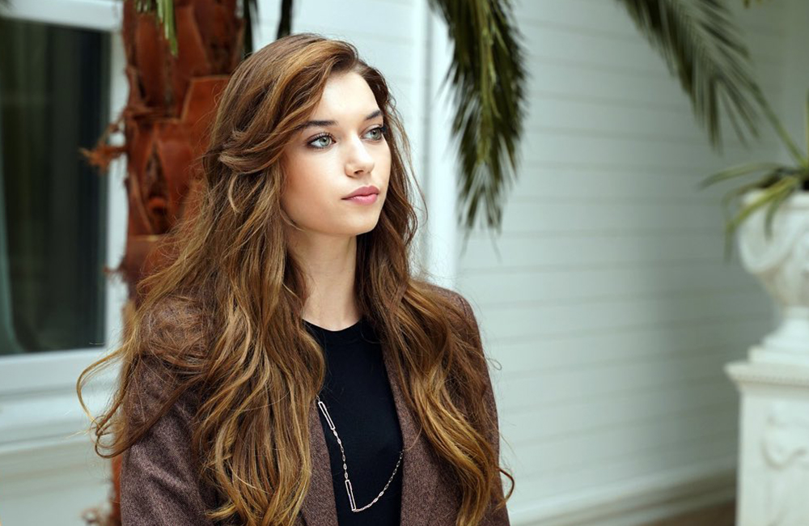

Афра Сарачоглу дебютувала у фільмі «Другий шанс». Афрі подобається грати сильних жінок
Мама стала її імпресаріо та підписала контракт на 5 років і Афра опинилась у модельному бізнесі
Завдяки серіалу «Пані Фазилет та її доньки», де грала головну роль, набула популярності
Зараз знімається в серіалі «Зимородок», який є популярним в Туреччині та за її межами
Афра Сарачоглу — популярна турецька актриса та модель. Народилася 2 грудня в 1997 році. Незважаючи на юний вік, вона знімається в великих проектах з високими рейтингами.
У 2017—2018 роках відігравала головну роль у серіалі «Пані Фазилет та її дочки», після чого набула популярності.
Сім'я Сарачоглу родом з Центральної Анатолії, невеликого міста Ескішехір. Дитинство дівчинки пройшло на березі річки Порсук. Вона з молодості хотіла виступати у театрі, часто грала сценки перед родичами. Любила шити, своїми руками готувала костюми до вистав. Коли Афра була маленькою, батьки розлучилися. Дитину виховала мати. Колишній чоловік переїхав до Стамбула і не намагався налагодити відносини з єдиною дочкою. Своєю сім'єю актриса вважає маму, дідуся і бабусю, а на батька вона до сих пір в образі. "Він нічого не зробив для мене, не хотів зі мною бачитися. Я вважаю, батько повинен приділяти час дитині навіть після розлучення «- міркує актриса в інтерв'ю для журналу» Hürriyet ".
З ранніх років мама вирощувала її сама. Коли дівчинці було дев'ять років, її батьки розлучилися. Після розлучення мати разом із Афрою перебралася до Анталії і майбутня актриса вирішила розірвати всі стосунки з татом. Коли Афрі було 14 років, вона вирішила докласти величезних зусиль, щоб допомогти своїй матері покращити матеріальне становище. Дівчина поговорила з мамою, і та на якийсь час стала її імпресаріо. Мати змогла підписати для неї вигідний контракт на 5 років, і вона опинилася в модельному бізнесі.
У 19 років красива дівчина пройшла кастинг в модельне агентство. У неї не було акторської або іншої вищої освіти. Зйомки в роликах приносили невеликі, але все ж гроші. Після кількох успішних робіт Афру запросили в серйозний проект.
Афра Сарачоглу дебютувала у фільмі «Другий шанс». Це історія любові, де обидва партнери обтяжені спогадами про минулі відносини. Життя дає можливість почати все спочатку.
Сарачоглу подобається грати сильних жінок.
Друга робота кінозірки — роль Кайли в фільмі «Поганий хлопець». Вона переїжджає в нове місто до батька і намагається адаптуватися на новому місці. У цьому Кайлі допомагає сусід-інтроверт, якого грає популярний актор Толга Сариташ. Між молодими людьми з часом виникають почуття. Критики позитивно відгукнулися про акторську роботу, відзначили чудову пару Сарачоглу і Сариташ. Музичний супровід фільму теж сподобалося глядачам.
2018 рік видався насиченим — Сарачоглу знялася відразу в трьох фільмах. Два фільми вийшли в прокат в грудні, слідом — довгий серіал з декількох сезонів. Бувало так, що дівчина працювала в одному проекті, а на наступний день вживалася в іншу роль на другому знімальному майданчику. Актриса згадує в інтерв'ю, що зйомки були інтенсивними і часто доводилося працювати понаднормово.
Їй допомогла порада колег: після того, як знімальний день закінчено, потрібно забути про свого героя. Не можна асоціювати себе з ним і продовжувати жити його життям за межами екрану.
У фільмі «Пані Фазилет та її дочки» Сарачоглу грає Едже, мрійливу і наївну молоду дівчину. Вона закохана в бідного хлопця. Едже ніхто не розуміє, і навіть мати відвернулася від неї. Актриса зізнається, що ця роль навчила її нікому не довіряти в житті. Серіал завоював широку популярність як на батьківщині, так і за кордоном. В Україні транслювався на телеканалі "Інтер". У «Добрій грі» актрисі дісталася роль сучасної дівчини Ади, яка всерйоз захоплена відеоіграми. Її героїня весь день проводить в інтернеті: веде блог, записує ролики. Одного разу її випадає шанс взяти участь в міжнародних змаганнях. Там вона зустрічає свою любов.
Афра Сарачоглу для Vogue Turkiye
Серіал «Пані Фазилет та її доньки»
Афра з партнером по серіалу «Зимородок»
Афра Сарачоглу для Garnier Turkiye
У фільмі «Чи це любов?» актриса зіграла Гюлум. Це дуже розумна дівчина, що має дар до малювання. Стійкий, рішучий характер дозволяє їй досягати висот. Але, на жаль, кар'єра переважає і на особисте життя не залишається часу. Гюлум нещасна і ніяк не може завести серйозні відносини. Це улюблена роль актриси. У журналі «Milliyet» вона розповіла шанувальникам, що у них з героїнею багато спільного: це сильна, непохитна жінка з великою життєвою енергією.
Зйомки багатосерійних фільмів стомлюючі. Одна 160-хвилинна серія знімається протягом тижня. Дівчина зізнається в інтерв'ю, що їй неймовірно пощастило — її колегами були знамениті зірки кіно з багатим досвідом. Вона багато чому навчилася у них.
Остання робота Сарачоглу — серіал «Діти сестер». Її персонаж Хайят — амбітна особистість, в житті нею керує пристрасть і впертість. Вона не приховує своїх емоцій. Єдина підтримка 20-річної героїні — її мати. Цим актриса схожа на свого персонажа.
Зараз Афра знімається в серіалі «Зимородок» (Yalı Çapkını), який має високі рейтинги та є популярним не тільки в Туреччині а й за її межами.